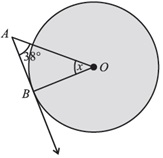
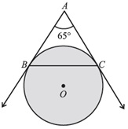
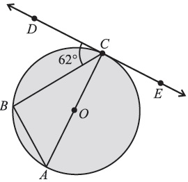
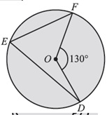
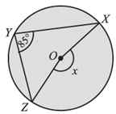
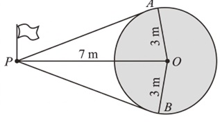
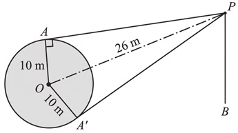

Prepared by Muhammad Tayyab, Subject Specialist Mathematics, Govt Christian High School Daska
📌 Based on National Curriculum 2023 / PECTAA Syllabus
📖 What's Inside: This exercise covers tangent properties, tangents from an external point, central and inscribed angles, and circles touching externally or internally. Perfect for Punjab Boards exam preparation.
If the PDF does not load, click here to view it directly on Google Drive .
📚 Related Resources – Chapter 9: Tangent and Angles
Advertisement
Class 10 Math Chapter 9 Exercise 9.1 – Tangent and Angles of a Circle: Complete Guide
Chapter 9 of Class 10 Mathematics introduces students to tangents and angles in a circle. Exercise 9.1 is the foundational exercise of this chapter, designed to help students understand and apply the key theorems about tangents, central angles and inscribed angles. These ideas appear in engineering design, robotics path planning, gear and machine design, and optical systems, which makes the topic both practical and exam-relevant.
What You Will Learn
By working through Exercise 9.1, students learn that a tangent is perpendicular to the radius at the point of contact, that two tangents drawn from an external point are equal in length, and that the central angle is double the inscribed angle on the same arc. You will also find the distance between the centres of two circles touching externally or internally.
Topics Covered in This Exercise
- Tangent ⊥ Radius – using the fact that a tangent is perpendicular to the radius at the point of contact to find unknown angles.
- Equal Tangents – applying the theorem that tangents from an external point are equal to find angles and lengths.
- Central and Inscribed Angles – using the theorem that the central angle is double the angle at the circumference.
- Angle in a Semicircle – an angle inscribed in a semicircle is a right angle.
- Touching Circles – distance between centres equals the sum of radii (external) or the difference of radii (internal).
Why Exercise 9.1 Is Important
Exercise 9.1 is the foundation exercise of Chapter 9. Punjab Board exam papers frequently draw short questions and objective-type questions from tangent properties and the central angle theorem. Students who master this exercise will find the rest of Chapter 9 much easier to understand.
Punjab Board Preparation
For students preparing for board exams under any of the 9 BISE Punjab boards, this exercise should be treated as compulsory practice. The theorems covered here are tested both as numerical problems and as short conceptual questions.
PECTAA Syllabus Alignment
These solved notes are aligned with the Punjab Education & Curriculum Textbook Authority (PECTAA) syllabus, following the National Curriculum 2023 framework for Class 10 Mathematics. The question numbering, formulas, and terminology match the current Punjab textbook.
Exam Tips for Tangents and Angles
- Always draw a diagram and join the centre to the point of contact; this gives a 90° angle immediately.
- Remember that tangents from an external point are equal, so the triangle they form is isosceles.
- For tangent-length problems use: \(\text{Tangent}^2 = (\text{Distance from centre})^2 - \text{Radius}^2\).
- For touching circles, check first whether the touch is external (add radii) or internal (subtract radii).
Common Mistakes Students Make
- Forgetting that the angle between a tangent and the radius is always \(90^\circ\).
- Adding the radii when the circles touch internally (they must be subtracted).
- Using the wrong angle pair in the central angle theorem: the central angle is double the inscribed angle, not half.
- Writing the wrong unit in the final answer (cm instead of m, or the reverse).
Use the table of contents below to jump directly to any question, or scroll through the full solved exercise in order.
Given: \( A \) is an external point, \( AB \) is a tangent to the circle with centre \( O \), and \( m\angle A = 38^\circ \).
To find: The value of \( x = m\angle O \).
Solution: Since \( AB \) is a tangent, it is perpendicular to the radius \( OB \) at the point of contact, so \( AB \perp OB \) and \( m\angle B = 90^\circ \). In \( \triangle OAB \):
Hence, \( x = 52^\circ \).

Given: \( A \) is an external point. \( AB \) and \( AC \) are tangents to the circle, and \( m\angle CAB = 65^\circ \).
To find: \( m\angle ABC \).
Solution: Tangents from an external point are equal in length, so \( AB = AC \). Therefore \( \triangle ABC \) is isosceles and:
In \( \triangle ABC \):

Given: \( \overline{AC} \) is a diameter, \( \overleftrightarrow{DE} \) is the tangent at \( C \), and \( m\angle BCD = 62^\circ \).
To find: (i) \( m\angle BCA \) (ii) \( m\angle BAC \).
(i) Since \( \overleftrightarrow{DE} \) is the tangent at \( C \), \( DE \perp CA \) and \( m\angle ACD = 90^\circ \). We know that:
(ii) Since an angle inscribed in a semicircle is a right angle, \( m\angle ABC = 90^\circ \). In \( \triangle ABC \):

Given: Centre \( O \), \( m\angle DOF = 130^\circ \) (central angle).
To find: \( m\angle DEF \).
Solution: By the central angle theorem, the central angle is double the angle at the circumference standing on the same arc:

Given: Centre \( O \), \( m\angle XYZ = 85^\circ \) (angle at the circumference).
To find: The central angle \( x = m\angle ZOX \).
Solution: By the central angle theorem, the central angle is double the angle at the circumference:

Given: Radius \( OA = 3\text{ m} \), distance from the pole to the centre \( OP = 7\text{ m} \). Each rope just touches the fountain, so it is a tangent.
To find: Length of each rope, \( AP \).
Solution: Let \( O \) be the centre of the fountain, \( P \) the flagpole, and \( A \) a point of contact of a rope with the circle. \( PA \) is a tangent, so \( PA \perp OA \). In right \( \triangle OAP \), by Pythagoras' theorem:
Since tangents from an external point are equal, both ropes have the same length. Each rope is approximately \( 6.32\text{ m} \) long.

Given: Radii \( r_1 = 5\text{ cm} \), \( r_2 = 7\text{ cm} \); the circles touch externally.
To find: Distance between the centres.
Solution: For two circles touching externally, the distance between their centres equals the sum of their radii:
Given: Radius of dish \( R = 15\text{ cm} \), radius of sensor \( r = 2.5\text{ cm} \); the circles touch internally.
To find: Distance between the centres.
Solution: For two circles touching internally, the distance between their centres equals the difference of their radii:
Given: Radius of outer container \( R = 8\text{ cm} \), radius of inner holder \( r = 6\text{ cm} \); the circles touch internally.
To find: Distance between the centres.
Solution: For two circles touching internally, the distance between their centres equals the difference of their radii:
Given: Radius \( OA = 10\text{ m} \), distance from the pole to the centre \( OP = 26\text{ m} \). Each wire just touches the circle, so it is a tangent.
To find: Length of each wire, \( AP \).
Solution: Let \( O \) be the centre of the plaza, \( P \) the pole, and \( A \) a point of contact of a wire with the circle. Since \( PA \) is tangent at \( A \), \( OA \perp PA \). In right \( \triangle OAP \), by Pythagoras' theorem:
Since tangents from an external point are equal, both wires have the same length. Each wire is \( 24\text{ m} \) long.

📈 Key Concepts & Quick Revision
📐 Tangent & Angle Theorems
- Tangent ⊥ Radius: A tangent to a circle is perpendicular to the radius at the point of contact.
- Equal Tangents: Tangents drawn from an external point to a circle are equal in length.
- Central Angle Theorem: The central angle is double the inscribed angle standing on the same arc: \( m\angle \text{centre} = 2 \times m\angle \text{circumference} \).
- Angle in a Semicircle: An angle inscribed in a semicircle is a right angle.
- Tangent Length: \( \text{Tangent}^2 = (\text{Distance from centre})^2 - \text{Radius}^2 \).
- Touching Circles: Externally, distance between centres \( = r_1 + r_2 \). Internally, distance between centres \( = r_1 - r_2 \) (larger minus smaller).
🏆 Board Exam Tips & Strategy
- Always draw a neat diagram and join the centre to the point of contact.
- Identify the right-angled triangle formed by the radius, the tangent and the line from the centre to the external point.
- When two tangents come from one point, immediately write "tangents from an external point are equal".
- Write units with the final answer and state the theorem you used for each step.
📝 Multiple Choice Questions (Exercise 9.1 Practice)
1. A tangent to a circle is ______ to the radius at the point of contact.
A tangent is perpendicular to the radius drawn to the point of contact.
2. Two tangents drawn to a circle from an external point are:
Tangents from an external point to a circle are equal in length.
3. Two circles of radii \(4\text{ cm}\) and \(9\text{ cm}\) touch externally. The distance between their centres is:
For external touching, distance \(= 4 + 9 = 13\text{ cm}\).
4. Two circles of radii \(10\text{ cm}\) and \(3\text{ cm}\) touch internally. The distance between their centres is:
For internal touching, distance \(= 10 - 3 = 7\text{ cm}\).
5. A point is \(17\text{ cm}\) from the centre of a circle of radius \(8\text{ cm}\). The length of the tangent from the point to the circle is:
Tangent \(= \sqrt{17^2 - 8^2} = \sqrt{289 - 64} = \sqrt{225} = 15\text{ cm}\).
❓ Frequently Asked Questions
What is taught in Exercise 9.1 of Class 10 Math Chapter 9?
Exercise 9.1 covers the properties of tangents: a tangent is perpendicular to the radius at the point of contact, tangents from an external point are equal, the central angle is double the inscribed angle, and the distance between the centres of circles that touch externally or internally.
How many questions are there in Chapter 9 Exercise 9.1?
Exercise 9.1 contains 10 questions covering angle calculations, tangent lengths in real-life settings, and the distance between the centres of touching circles.
What is the most important theorem in Exercise 9.1?
The most important theorem is: "A tangent to a circle is perpendicular to the radius at the point of contact." It creates a right-angled triangle, which lets us use the angle sum property or Pythagoras' theorem in most questions of this exercise.
How do you find the length of a tangent from an external point?
Join the centre to the external point and to the point of contact. This forms a right-angled triangle with the radius perpendicular to the tangent. Use: \(\text{Tangent} = \sqrt{(\text{Distance from centre})^2 - \text{Radius}^2}\).
How do you find the distance between the centres of two touching circles?
If the circles touch externally, add the radii. If they touch internally, subtract the smaller radius from the larger one.
Is this solution according to the PECTAA syllabus?
Yes, these solutions are prepared according to the PECTAA / National Curriculum 2023 syllabus for Class 10 Mathematics.
Is this Exercise 9.1 solution valid for all Punjab Boards?
Yes, the content follows the unified Punjab textbook and is applicable to students of all 9 BISE Punjab boards.
Are solved PDF notes available for Exercise 9.1?
Yes, a complete solved PDF for Exercise 9.1 is embedded at the top of this page and is available to download for free.
Who prepared these Class 10 Math Chapter 9 notes?
These notes were prepared by Muhammad Tayyab, Subject Specialist Mathematics at Govt Christian High School Daska, for Hira Science Academy.